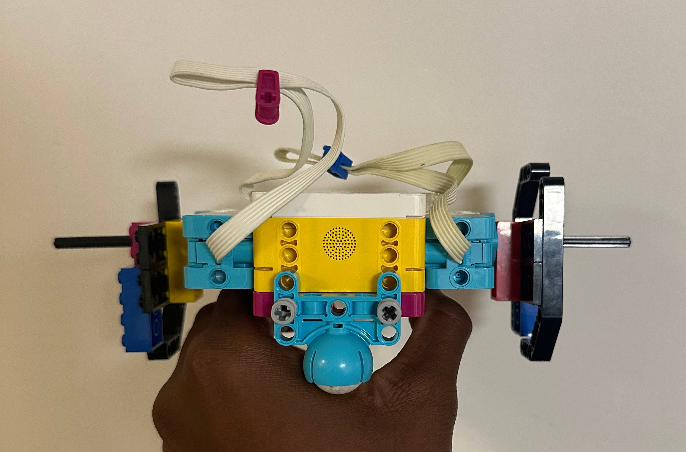

Dr.E had us use our LEGO SPIKE Prime set to create a robot that could walk in a silly manner. We were under a time limit and using the materials I had I attempted to create something that was able to traverse quickly and also still remain sturdy. I used curved pieces to try and create wheels and also added a ball counterweight to prevent the walker from flipping over easily. Over it was a great learning experience to be able to know how to problem-solve under pressure.